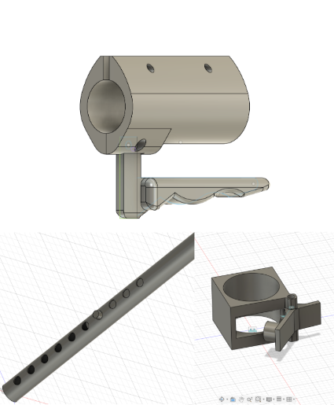

3. Key Features
The core mechanics that make stair use safer and more autonomous.

Spring-Assisted Wheel Cluster
Converts downward + forward support force into vertical lift assistance, reducing upper-body strain and eliminating the “clank” of traditional tri-wheel rotators.

Universal Walker Mount
Adjustable bracket system allows attachment to standard at-home walkers, enabling rapid adoption without buying a full new frame.

Stair Safety Lock
Prevents rollback between stair steps, offering confidence for elderly and post-op users. Positioned to be easy to access while holding the walker.